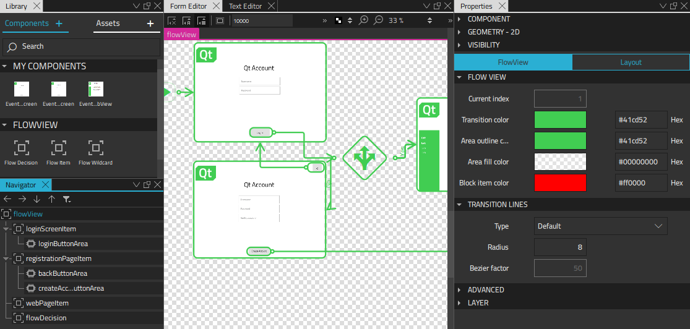
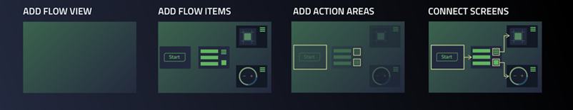

Designing Application Flows

In Qt Design Studio, a flow view represents a schematic diagram. It consists of flow items that represent the screens in the UI and transition lines that connect them, thus illustrating the possible user pathways through the UI. You use action areas as starting points for transition lines. You can attach effects to transition lines, such as fade or push, to determine what users see when one flow item changes into another.
You can use flow decisions to set up alternative pathways between flow items in the UI. For example, if user input determines which flow item should open next, you can test the different scenarios in the prototype by having a dialog pop up where you can select which flow item to show next.
Especially on mobile and embedded platforms, the application might need to react to external events from the platform, such as notifications or other applications requiring the users' attention. You can use flow wildcards to determine the priority of flow items by adding them to positive and negative lists.
To design application flows:

- Use a project wizard template to add a Flow View component, as described in Adding Flow Views.
- Use a project wizard template to add a Flow Item component for each screen in the UI, as described in Adding Flow Items.
- Use context menu commands to add action areas and transitions, as described in Adding Action Areas and Transitions.
- Use context menu commands to apply effects to transitions, as described in Applying Effects to Transitions.
- When you are ready for production, use the event list simulator to replace transition lines with connections to real signals from UI controls, as described in Simulating Events.
- To set up alternative pathways between flow items, use Flow Decision components from Components > Flow View, as described in Simulating Conditions.
- Use states in flows to modify the appearance of components on screens in response to user interaction, as described in Applying States in Flows.
- Use Flow Wildcard components from Components > Flow View to prioritize events from other applications and to stop some screens from appearing on others, as described in Reacting to External Events.